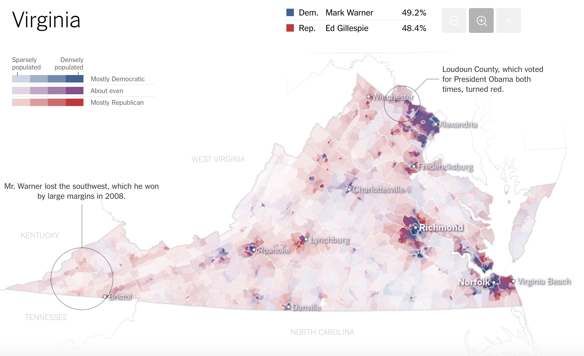

This is my critique on the article titled “The Most Detailed Maps You’ll See From the Midterm Elections” @nytimes/upshot
This visualization is a precinct-level choropleth map of election results from the midterm elections. The objective of the visualization is to show a fine-grained analysis of how the Republicans and Democrats are spread along with the population density, measured by the graduated color scale.
A precinct is one of the part into which a town or city is divided in order to organize elections, as reported by the article- “there were more than 175,000 precincts in the United States in 2012, fifty times the number of counties”.
So this demonstrates the sheer efficacy of the precinct-level data and how effectively one can draw insights when the data is much finer. Now the county level analysis of polling results gives a clearer picture of how the data spread within the county. Hence, this visualization for me appears to have the potential to convey actionable insights.
This is a geo-location based map visualization technique called choropleth map and it uses a coloring scheme inside defined areas on a map in order to show value levels and indicate the average values of some property or quantity in those areas.
The basic design is to represent Democratic in blue and Republican in red with various hue levels based on the population density within the precincts. Much needed zoom functionality is provided with dynamic county-level labeling in the first layer and precinct-level labeling in the further zoom levels.
The precinct-level data clearly adds a lot of detail and outlines distinct clusters. Helpful for finding intriguing relationships between two or more geographic location based on the nature of the population. Give an idea of how each area compares with other in terms of number and spread of votes.
State wise polling data is sourced from the corresponding state’s Board of Elections, therefore the probe for data integrity will be simply out of question, at least from where I stand. Streets data by OpenStreetMap contributers.